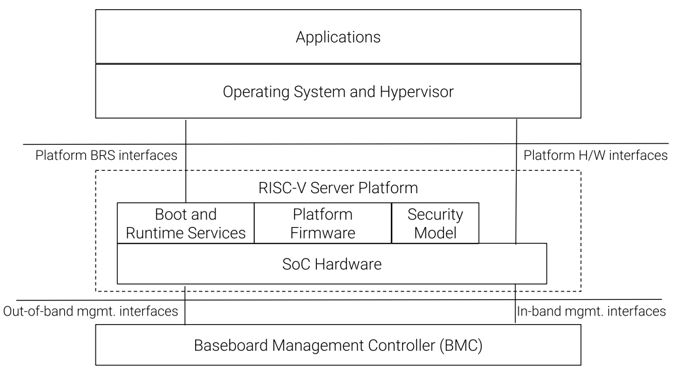

1.1. Introduction
The RISC-V Server Platform specification defines a standardized set of hardware and sofware capabilities, that portable system software, such as operating systems and hypervisors, can rely on being present in a RISC-V server platform.
A server is a computing system designed to manage and distribute resources, services, and data to other computers or devices on a network. It is often referred to as a 'server' because it serves or provides information and resources upon request. Such computing systems are designed to operate continually and have higher requirements for capabilities such as RAS, security, performance, and quality of service. Examples of servers include web servers, file servers, database servers, mail servers, game servers, and more. This specification focuses on defining requirements for general-purpose server computing systems that may be used for one or more of these purposes.

The RISC-V server platform is defined as the collection of RVA profile-compliant application processor harts, SoC hardware, peripherals, platform firmware, boot/runtime services, and platform security services. The platform provides hardware interfaces (e.g., harts, timers, interrupt controllers, PCIe root ports, etc.) to portable system software. It also offers a set of standardized boot and runtime services based on the UEFI and ACPI standards. To support provisioning and platform management, it interfaces with a baseboard management controller (BMC) through both in-band and out-of-band (OOB) management interfaces. The in-band management interfaces support the use of standard manageability specifications like MCTP, PLDM, IPMI, and Redfish for provisioning and management of the operating system executing on the platform. The OOB interface supports the use of standard manageability specifications like MCTP, PLDM, Redfish, and IPMI for functions such as power management, telemetry, debug, and provisioning. The platform security model includes guidelines and requirements for aspects such as debug authorization, secure/measured boot, firmware updates, firmware resilience, and confidential computing, among others. A primary goal of this specification is to enable interoperability between conforming servers and the large ecosystem of portable system software, available from a variety of sources, such that conforming servers are not limited to any single system software distribution.
The platform firmware, typically operating at privilege level M, is considered part of the platform and is usually expected to be customized and tailored to meet the requirements of the SoC hardware (e.g., initialization of address decoders, memory controllers, RAS, etc.), boot/runtime services and platform security.
This specification standardizes the rules for hardware and software interfaces and capabilities by building on top of relevant RISC-V standards, such as the RISC-V Architecture Profiles, Server SoC, Boot and Runtime Services and Platform Security specifications for server software executing on the application processor harts at privilege levels below M. It enables operating system and hypervisor vendors to support such platforms with a single binary OS image distribution model. The rules provided by this specification represent a standard set of infrastructural capabilities, encompassing areas where divergence is typically unnecessary and where novelty is absent across implementations.
To be compliant with this specification, the server platform MUST support all mandatory rules and MUST support the listed versions of the specifications. This standard set of capabilities MAY be extended by a specific implementation with additional standard or custom capabilities, including compatible later versions of listed standard specifications. Portable system software MUST support the specified mandatory capabilities to be compliant with this specification.
The rules in this specification use the following format:
| ID# | Rules |
|---|---|
CAT_NNN |
The |
A rule or a group of rules may be followed by non-normative text providing context or justification for the rule. The non-normative text may also be used to reference sources that are the origin of the rule. |
|
This specification groups the rules in the following broad categories:
-
Hardware
-
Firmware
-
Security
1.1.1. Glossary
Most terminology has the standard RISC-V meaning. This table captures other terms used in the document. Terms in the document prefixed by 'PCIe' have the meaning defined in the PCI Express (PCIe) Base Specification [2] (even if they are not in this table).
| Term | Definition |
|---|---|
ACPI |
Advanced Configuration and Power Interface [3]. |
BMC |
Baseboard Management Controller. A motherboard resident management controller that provides functions for platform management. |
Guest |
Software in a virtual machine. |
ID |
Identifier. |
OS |
Operating System or Hypervisor. |
SBI |
RISC-V Supervisor Binary Interface Specification [4]. |
SEE |
Supervisor Execution Environment. The environment in which supervisor-level software (such as an OS) executes. |
SoC |
System on a chip, also referred as system-on-a-chip and system-on-chip. |
UEFI |
Unified Extensible Firmware Interface [5]. |
VM |
Virtual Machine. |